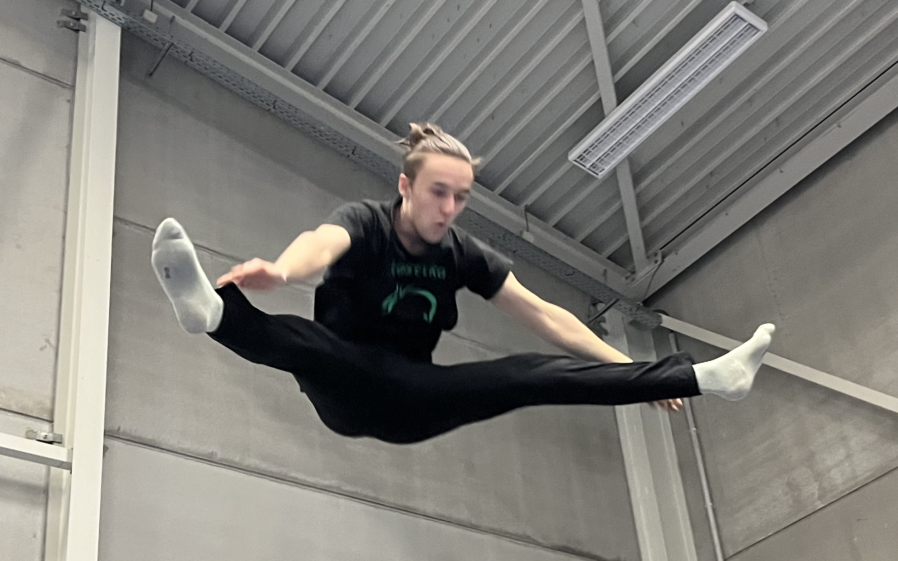

Parallel bars
These are the parallel bars, I'm currenty training my swings to get high enough.
This may not look hard, but there is a lot of tension required to get high up.

Mens rings
The mens rings are a particullary hard, as you need a lot of chest and back muscle.
The difficulty is partly due to the fact that the muscle up is the easiest way to get up on the rings.

Another exercise performed on these rings is the predecessor to the hand stand, the shoulder stand.

Trampoline
*Insert scroll video*
The trampoline is my main category, I also train young gymnast for this discipline.
Up to now, my most advanced exercise was a triple front flip, which I have not been able to reproduce since.
Right now I mainly focus on twists and tension jumps.

You could call this a real poggers moment.